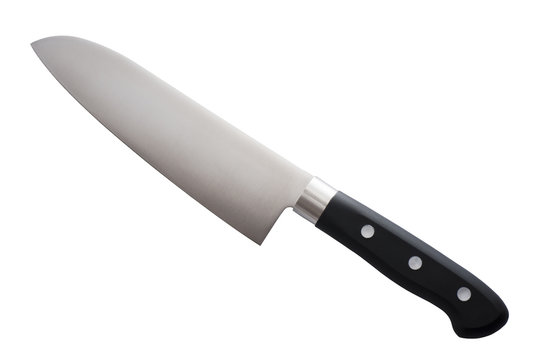
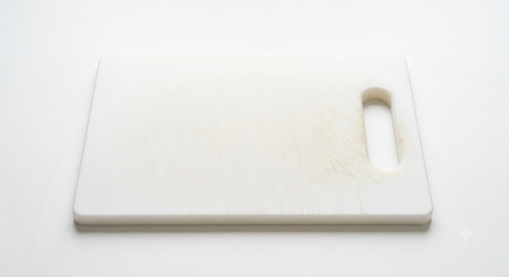
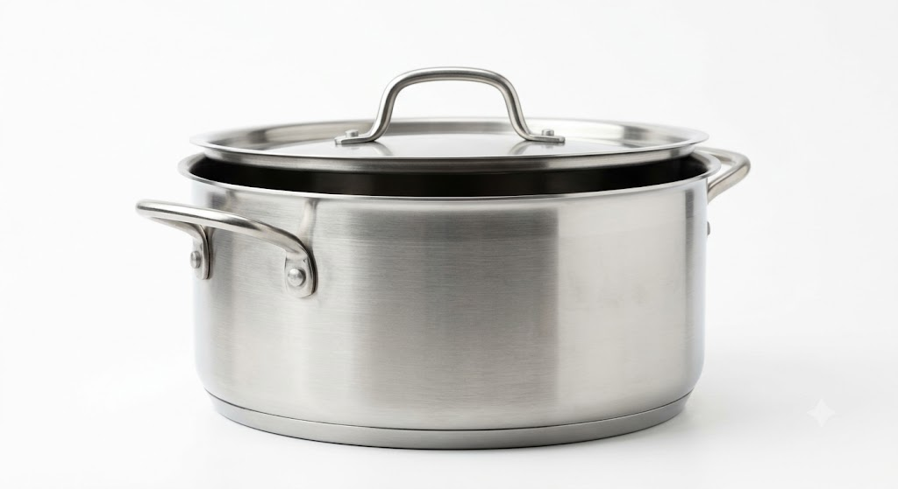
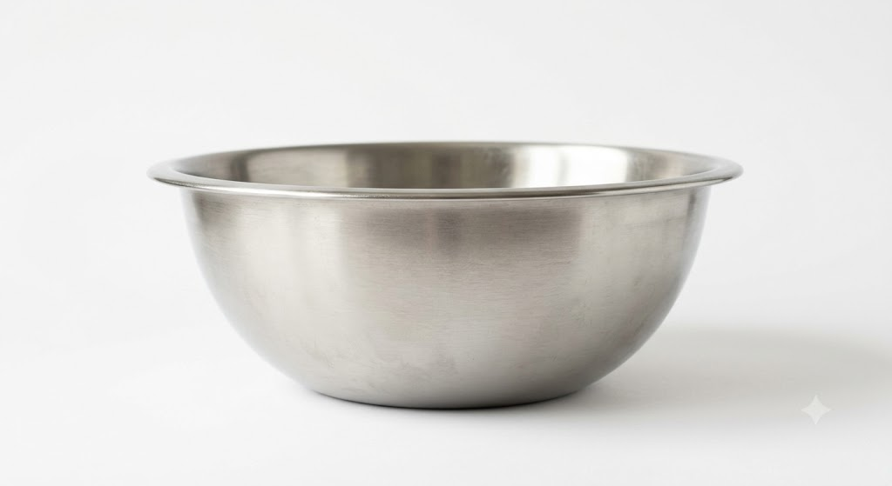
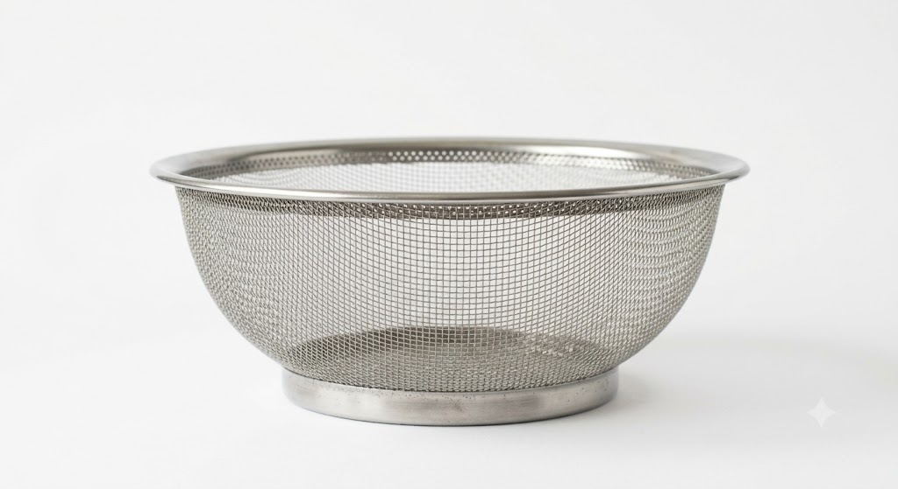
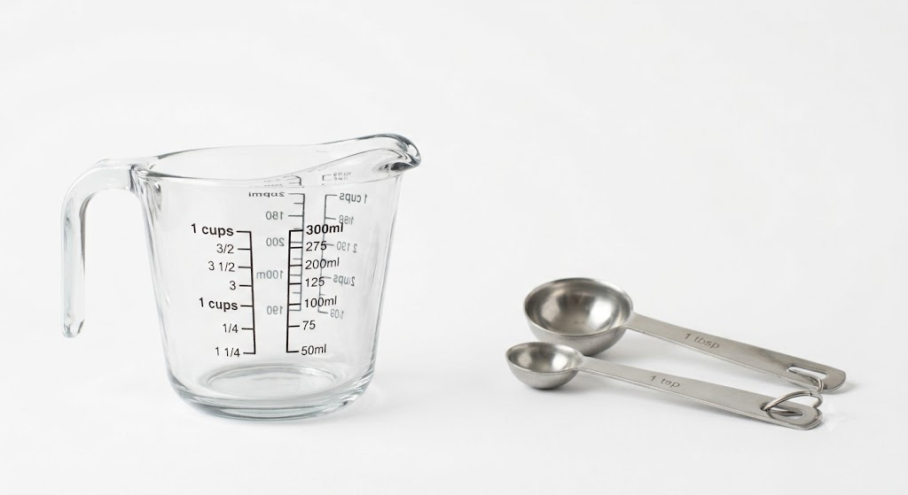
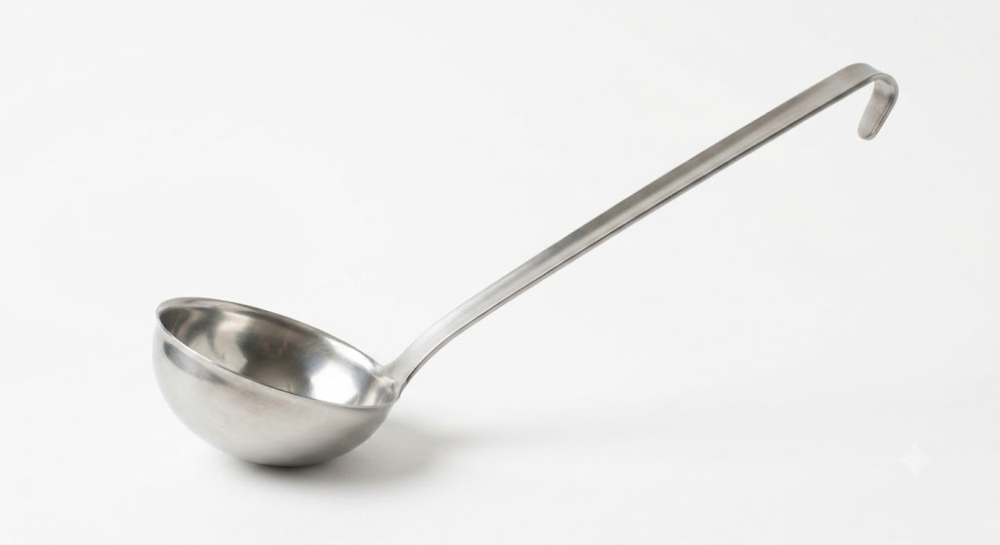
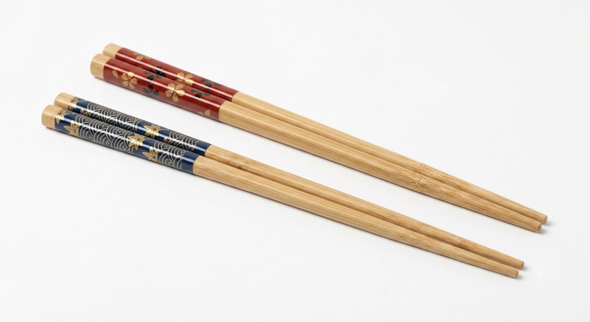

主な調理道具
包丁

食材を切るための基本の道具。 切る・刻む・削ぐ・皮をむくなど、 幅広い用途に使えます。
まな板

食材を切るときに使う台。 包丁の刃を痛めにくく、 作業台を清潔に保つことができます。
鍋

煮る、ゆでる、スープを作るのに使います。 いろいろな料理の ベースになる調理に欠かせません。
フライパン

焼く・炒める料理に使います。 初めて料理をする人にも 使いやすい道具です。
ボウル

食材を混ぜる、和える、下ごしらえをする時に使います。 サイズ違いでそろえると便利です。
ざる

食材の水切りや湯切りに使います。 野菜を洗ったり、お米を研ぐ時にも 役立ちます。
計量カップ・計量スプーン

調味料や水などを正確に量るための道具です。 味を安定させるには欠かせません。
おたま

スープや煮物をすくうのに使います。 汁気の多い料理の取り分けにも便利です。
菜箸

炒め物や揚げ物など、加熱中の食材を扱う時に使います。 盛り付けにも便利です。